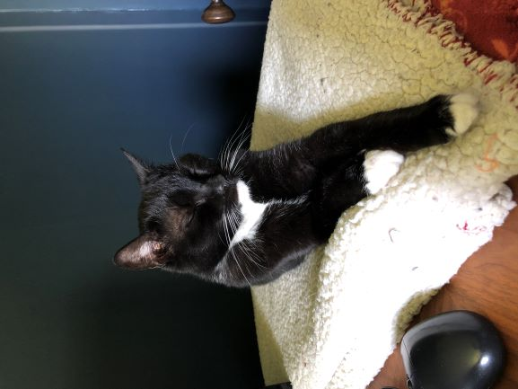

<!DOCTYPE html>
<html>
    <head>
        <title>TODO supply a title</title>
        <meta charset="UTF-8">
        <meta name="viewport" content="width=device-width, initial-scale=1.0">
        <link rel="stylesheet" href="css/about.css" />
        <link rel="shortcut icon" href="img/favicon.ico" />
    </head>
    <body>
        <main id="container">
            <aside id="graphic">
                
            </aside>
            <aside id="bio">
                <header id="header">Jason Pollard</header>
                <p>
                    I am a software developer with sixteen years of professional experience.
                </p>
                <p>
                    I currently work for <a href="https://www.optum.com/">Optum</a> as a Lead Software Engineer, building internal Java and JavaScript applications.
                </p>
                <p>
                    Quick bio: I earned a BA in Psychology and spent a number of years working a variety of jobs, including accounts payable, assistant manager at a bookstore, and installing cable modems.
                    I decided to pursue a career in technology and received certification with Microsoft Server and SQL Server 2000.
                    I got my first break with development using .NET 1.1 and Visual Basic .NET, and as the years progressed added C#, web development, and many other Microsoft-related skills.
                    In the early 2010's, I started learning other programming languages, including Python and Java, as well as basic DevOps practices like continuous integration.
                    In the last few years, I have switched from the Microsoft ecosystem to Linux, Java, and JavaScript, including Spring, Jakarta EE, and Node.js, as well as a number of different databases.
                    I mainly switched because the Java world is huge and Java EE/Jakarta EE encourages backwards compatibility. I always felt I had to relearn my frameworks every 2 years in the .NET world.
                    I think that running containers in the cloud, with a pragmatic dose of DevOps, is currently the way to go for application development. 
                </p>
                <p>
                    I am currently writing a book on developing modern web applications with Java, focusing on Jakarta EE, DevOps, containers and the cloud (with a hint of JavaScript). Stay tuned!
                </p>
                <p>
                    I live in rural Illinois, USA, with my family and pets.
                </p>
                <p>
                    <a href="/">Go back home</a>.
                </p>
            </aside>
        </main>
    </body>
</html>
